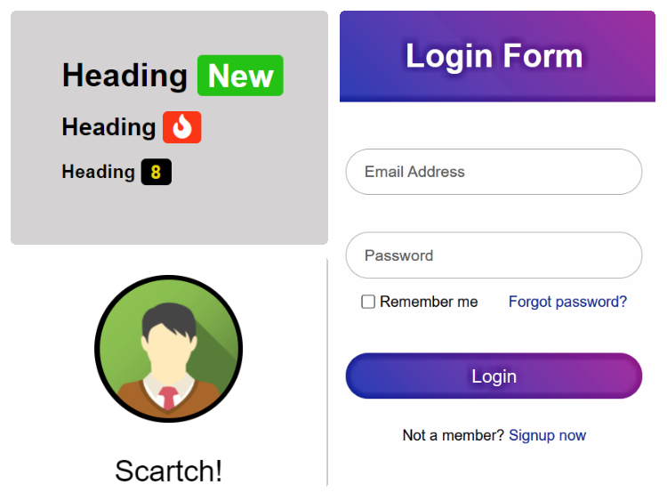
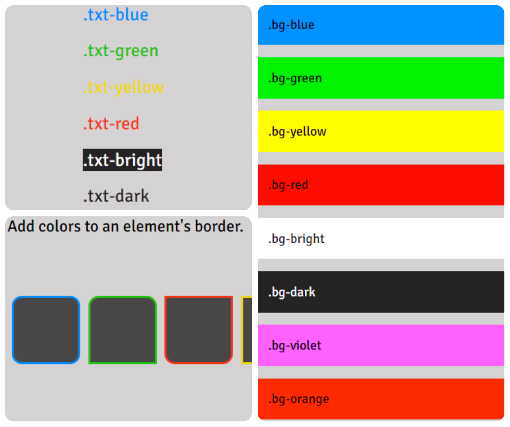

Let's get Started...
Scratch has some selected components and utilities for you.

COMPONENTS

UTILITIES

EFFECTS
Now let's see how to use em .
Download the CSS file.
Download the CSS file by clicking on the download button given below:
Your download will begin in a few seconds ...
Linking Scratch's CSS stylesheet to your HTML file.
Copy-paste the stylesheet link given below into your <head> before all other stylesheets.
< link rel="stylesheet" href="scratch-main.css" >
That's it !! Now you can use add all the Scratch's components and utilities in your website.